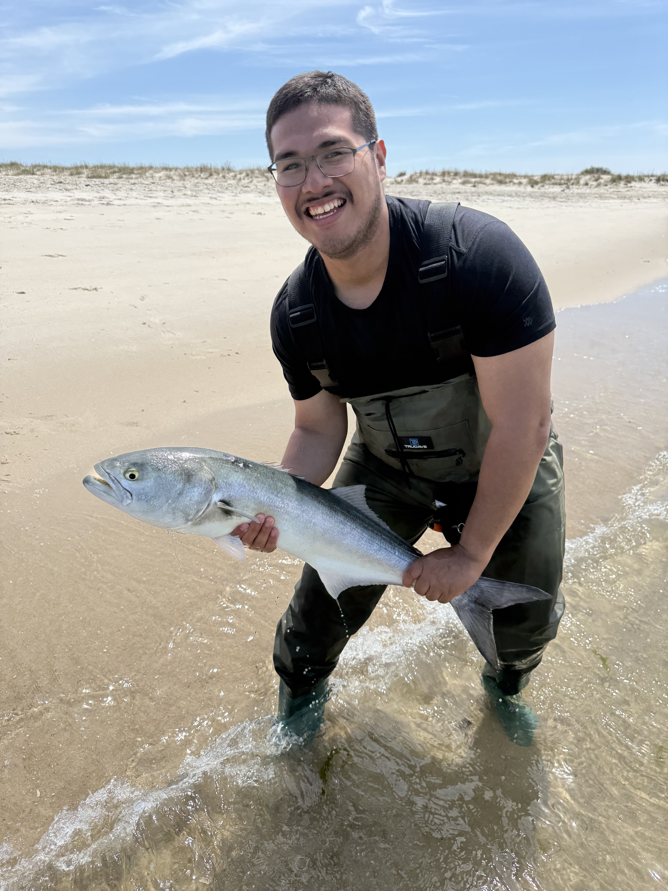

John Meraz
But you can call me John
Hi, I’m John Meraz, a software engineer passionate about building user-centered applications and collaborating on projects that make a real impact. With hands-on experience in full-stack development, data-driven projects, and machine learning, I thrive on solving problems and finding creative solutions. I’m fluent in both English and Spanish, and I’m committed to learning and growing in a dynamic, team-focused environment. When I’m not coding, I enjoy fishing trips that inspire some of my side projects!

Experience
| Job History | Time Employed | Job Description |
|---|---|---|
| Aramark retail staff | 1 Year | as retail staff each day i was part of a team who helped customers around the store finding items they would like to purchase. |
| Uber delivery | 2 Years | during the pandemic i road my bike across queens delivering food or groceries to people who ordered on the uber eats app. |
| NYtails Dog walker | 1 Year | Each day I was given a specific time and place to walk someone's dog and follow any information the owner left for me. When I finished each walk, I would update the owner on what business their dog did. |
| SYEP camp counselor assistant | 4 Years | The summer youth employment program let me have a job during high school, I always picked being a summer camp counselor assistant. My job was to watch over the group of kids with a camp counselor helping with homework and making sure they were having fun. |